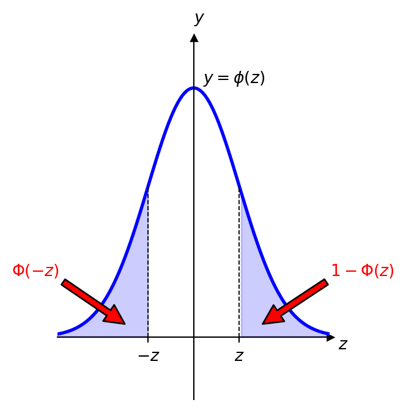

5 Continuous Probability Distributions
\[ \renewcommand{\P}{\mathbb{P}} \renewcommand{\E}{\mathbb{E}} \newcommand{\R}{\mathbb{R}} \newcommand{\var}{\mathrm{Var}} \newcommand{\cov}{\mathrm{cov}} \newcommand{\corr}{\mathrm{corr}} \newcommand{\dx}{\,\mathrm{d}x} \newcommand{\dy}{\,\mathrm{d}y} \newcommand{\eps}{\varepsilon} \]
5.1 Continuous Random Variables and their Characteristics
We recall that, see Definition 3.1, a random variable \(X\) is a function \(X:\Omega\to\mathbb{R}\).
We recall also, see Definition 3.3, that a probability distribution of a random variable \(X:\Omega\to\mathbb{R}\) is a mapping which assigns to each interval \(E\subset\mathbb{R}\) the value of \(\P\bigl(X\in E\bigr)\).
Remark. As you can see, the same formula holds for a discrete random variables, however, for continuous r.v. it does not provide an expression to calculate the probability. For this, we need the probaility denisty funciton defined below.
Recall that the expected value (mean) \(\E(X)\) of a random variable \(X\) is the average value it takes.
Recall that the variance \(\var(X)\) of a random variable \(X\) is a measure of the spread of its values, and it is defined through the formulas \[ \var(X) = \E\Bigl((X - \E(X))^2\Bigr)=\E\bigl(X^2\bigr) - \bigl( \E(X)\bigr)^2\geq0. \]
5.2 Main Examples
5.2.1 Uniform distribution
Definition 5.1 The uniform distribution is a continuous probability distribution where all outcomes within a specified interval are equally likely.
Example 5.1 Let \(X\sim U(1,5)\).
Find \(\P(2 < X <4)\).
Find \(c\in[1,5]\) such that \(\P(3 < X <c) = \dfrac13\).
Solution: a) Here \[ f_X(x) = \frac{1}{5-1}=\frac{1}{4}, \qquad x\in[1,5]. \] Therefore, \[ \P(2 < X <4) = \int_2^4\frac14\dx =\frac14\cdot(4-2)=\frac12. \]
- We have \[ \dfrac13=\P(3 < X <c)=\int_3^c \frac14\dx=\frac14(c-3), \] hence, \[ c-3=\frac43, \qquad c=\frac{13}{3}\in[1,5]. \]
5.2.2 Exponential Distribution
Definition 5.2 Recall that the (discrete) Poisson random variable models the number of independent events occurring in a fixed interval of time.The exponential distribution is a continuous probability distribution that models the time between these independent events. It is commonly used to model waiting times.
Example 5.2 Suppose the time between arrivals at a bus stop follows an exponential distribution with a rate parameter \(\lambda = 0.05\) arrivals per minute.
Calculate the probability that the next bus will arrive within the next \(10\) minutes.
Calculate the probability that you would need to wait at least \(15\) minutes until the next bus.
For how long on average you would need to wait for a bus?
Solution: a) Let \(X\sim \mathrm{Exp}(0.05)\) be the waiting time for the next bus. Then \[ \P(X \leq 10) = F_X(10)= 1 - e^{-0.05 \cdot 10}=1-e^{-0.5}\approx 0.3935. \]
We need to find \[ \P(X\geq15)=1-\P(X<15)=1-F_X(10)=e^{-0.05\cdot 15}=e^{-0.75}\approx 0.4724. \]
Since \[ \E(X)=\frac{1}{0.05}=20, \] you would need to wait, on average, for \(20\) minutes.
5.2.3 Normal Distribution

Statistical tables usually provide values of the function \(1-\Phi(z)\) for \(z\geq0\). It gives immediately answer for \(\Phi(-z)=1-\Phi(z)\) and for \(\Phi(z)=1-\bigl(1-\Phi(z)\bigr)\).
For example, from the statistical table we can find that \[ 1-\Phi(0.23)=0.4090. \] Then \[ \begin{aligned} \Phi(-0.23)&=1-\Phi(0.23)=0.4090,\\ \Phi(0.23)& =1- \bigl( 1-\Phi(0.23)\bigr) = 1-0.4090=0.5910. \end{aligned} \]
Example 5.3 Calculate the probability that a randomly selected individual has a height between \(162\) cm and \(169\) cm, given that the population mean height is \(165\) cm and the standard deviation is \(10\) cm, and that the heights follow the normal distribution.
Solution: Let \(X\) be the random variable representing the height of an individual. It is given then that \(X\sim\mathcal{N}(\mu,\sigma^2)\), where \(\mu=165\), \(\sigma=10\). We need to find \[ \P(162 \leq X \leq 173). \]
First step. We rewrite the required probabiligy in terms of the random variable \[ Z=\frac{X-\mu}{\sigma}, \qquad Z\sim\mathrm{N}(0,1). \] Namely, we have \[ \begin{aligned} \P(162 \leq X \leq 169)&=\P(162 -165\leq X-165 \leq 169-165)\\& =\P(-3\leq X-165 \leq 4)\\& =\P\biggl(-\frac{3}{10}\leq \frac{X-165}{10} \leq \frac{4}{10}\biggr)\\& =\P(-0.3\leq Z \leq 0.4)\\ &=\Phi(0.4)- \Phi(-0.3). \end{aligned} \] From the statistical table (see above), we have that \[ 1-\Phi(0.4)=0.3446, \qquad 1-\Phi(0.3)=0.3821. \] Therefore, \[ \Phi(0.4)=1-0.3446=0.6554, \qquad \Phi(-0.3)=1-\Phi(0.3)=0.3821, \] and hence, \[ \P(162 \leq X \leq 169)= 0.6554-0.3821=0.2733. \]
Surely, we can also use Python:
from scipy.stats import norm
norm.cdf(0.4) - norm.cdf(-0.3)0.2733331637992768